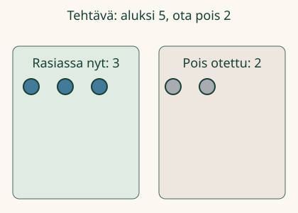
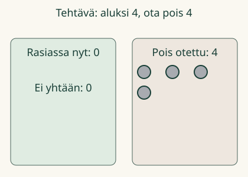

Rasiassa on 5 merkkiä. Loikka ottaa 2 pois. Montako rasiaan jää?
Rasiassa on 5 merkkiä. Loikka ottaa 2 pois. Montako rasiaan jää?
Montako jää?
Selvitän, montako jää, kun osa otetaan pois. Voit pysäyttää, katsoa uudelleen tai kokeilla itse.
Rasiassa on 5 merkkiä. Loikka ottaa 2 pois. Montako rasiaan jää?
Selvitän, montako jää, kun osa otetaan pois. Voit pysäyttää, katsoa uudelleen tai kokeilla itse.
Ilman liikkuvaa kuvaa: laita rasiaan 5 merkkiä. Siirrä 2 pois. Rasiaan jää 3. Kokeile myös, ettei rasiaan jää yhtään.

Aluksi 5. Pois 2. Jäljellä 3. Kirjoitamme 5 − 2 = 3. Miinus − tarkoittaa tässä pois ottamista.
Kysyttiin jäljelle jääviä, ei pois otettuja. Ennusta: jäisikö rasiaan enemmän, jos otettaisiin vielä yksi pois?
Ei. Jäljelle jää vähemmän. Jos pois otettiin vahingossa 3, vaikka piti ottaa 2, palauta yksi.

Toisessa rasiassa on 4 merkkiä. Kaikki 4 otetaan pois. Ei jää yhtään: 4 − 4 = 0.
Pöydällä on 7 palikkaa. Niistä 2 siirretään laatikkoon. Pöydälle jää 5. Palikat eivät hävinneet: kysyimme, montako jäi pöydälle.
Laske vain alkuperäiseen paikkaan jäävät. Voit myös laskea taaksepäin: 5, sitten 4, sitten 3. Lähtöluku 5 ei ole ensimmäinen askel. Kahdella askeleella päädyt lukuun 3. Yhtäsuuruusmerkki = kertoo saman määrän: lasku 5 − 2 on yhtä paljon kuin 3.
Jos 5 merkistä ei oteta yhtään pois, jää 5: 5 − 0 = 5. Jos 7 linnusta lentää ensin 2 ja sitten vielä 1 pois, jäljelle jää 4. Muista silloin molemmat poistot.
Vuosiluokat 1–2, M-SUB-01, procedure/atomic. Ainoa vaadittu JA-esitieto on M-NUM-02. Ydin on määrän vähentäminen pois ottamalla, ei kaikkien vähennyslaskun merkitysten opetus. Miinus ja yhtäsuuruus opetetaan tässä, eivätkä ne ole uusia esitietolukkoja. Taaksepäin laskeminen on vapaaehtoinen tuettu tapa; laskutavan valintaa tai esineen nimeämistä ei arvioida.
Numerokysymys koskee tilannetta, jossa tehtävän poisto on valmis. Numeron tarkistus ei hyväksy keskeneräistä mallia: mallilla on erillinen tarkistus. Oppilas voi vastata suoraan. Mallissa jokainen alkuperäinen merkki näkyy täsmälleen yhdessä paikassa, jäljellä tai pois otettuna. Mallin tarkistus hyväksyy minkä tahansa oikean kokoisen osajoukon missä tahansa poistamisjärjestyksessä. Näytä-painike on näkyvää tukea; se ei osoita itsenäistä esineiden valintaa.
Tapaukset sisältävät nollan sekä tilanteen, jossa pois otettuja ja jäljelle jääviä on yhtä monta. Tyhjä vastauskenttä ei tarkoita nollaa. Negatiivisia tuloksia, erotusvertailua tai vapaata lausekkeen rakentamista ei vaadita. Oikean luvun ilmoittaminen ei osoita näiden hallintaa.
Offline: siirrä samanlaisia turvallisia esineitä selvästi eri paikkaan ja kysy, montako jäi alkuperäiseen paikkaan. Lapsi voi osoittaa, kirjoittaa tai kertoa; aikuinen voi lukea. Ei pakollista puhetta tai jokaisen jäljelle jäävän esineen napauttelua. Ei tallennusta, pisteitä, henkilöhistoriaa tai päätelmää itsenäisestä, pysyvästä osaamisesta tai oppimisvaikutuksesta.
Lopuksi: mitä lasket, kun kysytään montako jää?